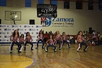
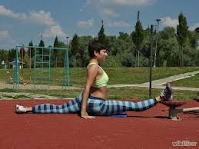

cheerleaders
CHEERLEADERS
Acerca de Nuestra Academia
¿Cómo ser una porrista?
Contactanos
Horarios y Servicios
¡Registrate¡
Decide qué clase de porrista quisieras ser. Si quieres entrar en competencias intercolegiales, aprender acrobacias,
algunos movimientos de gimnasia y equilibrio en pirámides humanas, únete a un equipo de animación profesional.

Ponte en forma, si no lo estás. La animación es un ejercicio muy demandante para tu condición física.Trabaja en tu flexibilidad. Busca en Internet cómo hacer estiramientos de porristas. Necesitas poder tocarte las puntas de los pies y abrir el compás de tus piernas por completo.

Aprende las habilidades esenciales dentro de la animación.Salta de la manera correcta. Recuerda mantener tu espalda erguida, tus brazos bien estirados, al igual que tus piernas, que deberán apuntar hacia arriba.